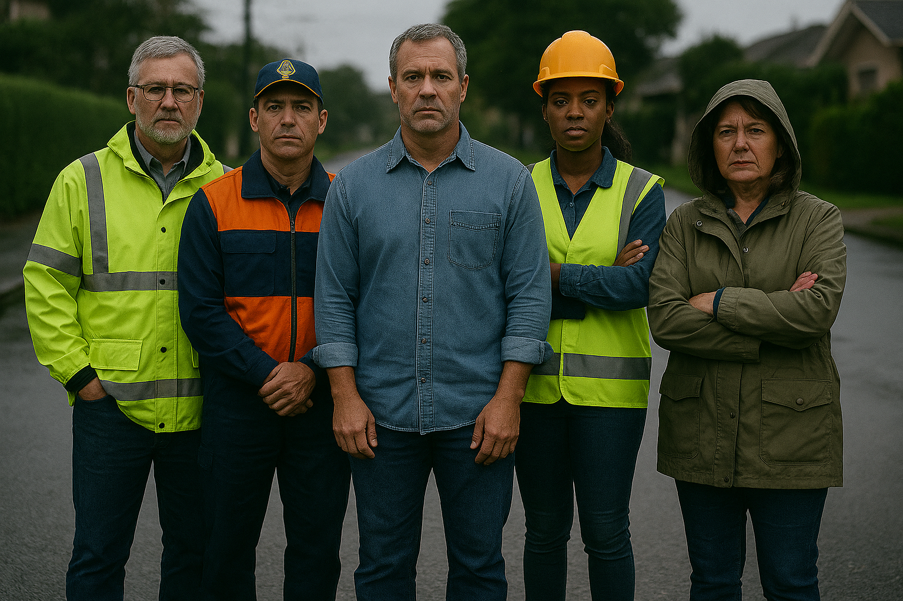

Nosso Público-alvo
Nosso público-alvo inclui agentes da Defesa Civil, operadores técnicos, equipes urbanas e cidadãos afetados diretamente por enchentes recorrentes frequentes.
Atendemos prefeituras, órgãos ambientais e comunidades locais que buscam soluções tecnológicas eficazes para prevenir alagamentos e proteger vidas humanas diariamente.